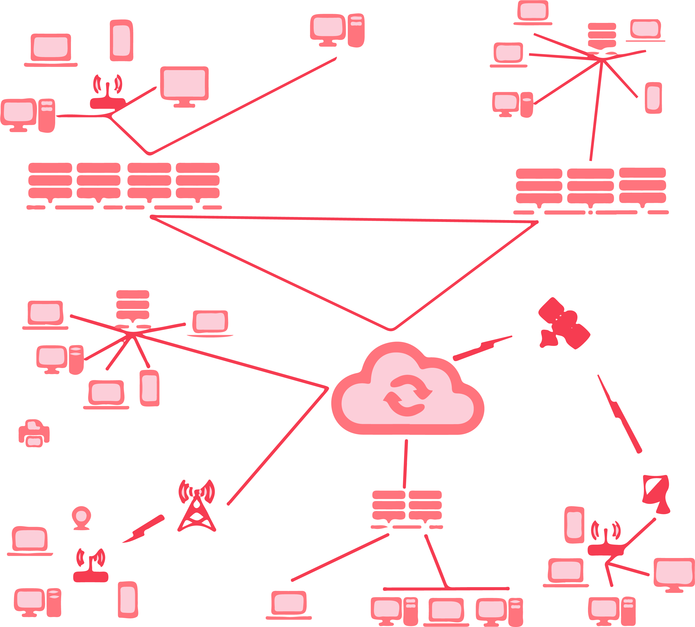
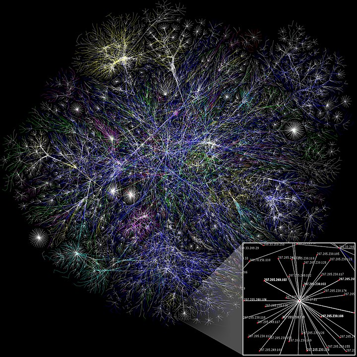

<!DOCTYPE html>
<html xmlns="http://www.w3.org/1999/xhtml" lang="sr-Cyrl"></html>
  <head>
    <meta charset="utf-8" />
    <meta name="viewport" content="width=device-width, initial-scale=1.0" />
    <title>Рачунарске мреже и интернет &#8212; 1_razred_IKT_DigitalnaPismenost</title>
    <link rel="stylesheet" href="../_static/pygments.css" type="text/css" />
    <link rel="stylesheet" href="../_static/basic.css" type="text/css" />
    <link rel="stylesheet" type="text/css" href="../_static/activecode.css" />
    <link rel="stylesheet" type="text/css" href="../_static/codemirror.css" />
    <link rel="stylesheet" type="text/css" href="../_static/clickable.css" />
    <link rel="stylesheet" type="text/css" href="../_static/pytutor.css" />
    <link rel="stylesheet" type="text/css" href="../_static/modal-basic.css" />
    <link rel="stylesheet" type="text/css" href="../_static/datafile.css" />
    <link rel="stylesheet" type="text/css" href="../_static/dragndrop.css" />
    <link rel="stylesheet" type="text/css" href="../_static/fitb.css" />
    <link rel="stylesheet" type="text/css" href="../_static/matrixeq.css" />
    <link rel="stylesheet" type="text/css" href="../_static/parsons.css" />
    <link rel="stylesheet" type="text/css" href="../_static/lib/prettify.css" />
    <link rel="stylesheet" type="text/css" href="../_static/poll.css" />
    <link rel="stylesheet" type="text/css" href="../_static/showEval.css" />
    <link rel="stylesheet" type="text/css" href="../_static/tabbedstuff.css" />
    <link rel="stylesheet" type="text/css" href="https://stackpath.bootstrapcdn.com/bootstrap/4.2.1/css/bootstrap.min.css" />
    <link rel="stylesheet" type="text/css" href="../_static/video.css" />
    <link rel="stylesheet" type="text/css" href="../_static/webgldemo.css" />
    <link rel="stylesheet" type="text/css" href="../_static/webglinteractive.css" />
    <link rel="stylesheet" type="text/css" href="../_static/karel.css" />
    <link rel="stylesheet" type="text/css" href="../_static/notes.css" />
    <link rel="stylesheet" href="../_static/user-highlights.css" type="text/css" />
    <link rel="stylesheet" href="https://use.fontawesome.com/releases/v5.1.1/css/all.css" type="text/css" />
    <link rel="stylesheet" href="../_static/bootstrap-4.0.0-dist/css/bootstrap.min.css" type="text/css" />
    <link rel="stylesheet" href="../_static/flatly.min.css" type="text/css" />
    <link rel="stylesheet" href="../_static/petlja.css" type="text/css" />
    <script id="documentation_options" data-url_root="../" src="../_static/documentation_options.js"></script>
    <script type="text/javascript" src="../_static/runestonebase.js"></script>
    <script type="text/javascript" src="../_static/jquery.js"></script>
    <script type="text/javascript" src="../_static/underscore.js"></script>
    <script type="text/javascript" src="../_static/doctools.js"></script>
    <script type="text/javascript" src="../_static/language_data.js"></script>
    <script type="text/javascript" src="../_static/jquery.highlight.js"></script>
    <script type="text/javascript" src="../_static/bookfuncs.js"></script>
    <script type="text/javascript" src="../_static/codemirror.js"></script>
    <script type="text/javascript" src="../_static/xml.js"></script>
    <script type="text/javascript" src="../_static/css.js"></script>
    <script type="text/javascript" src="../_static/python.js"></script>
    <script type="text/javascript" src="../_static/htmlmixed.js"></script>
    <script type="text/javascript" src="../_static/javascript.js"></script>
    <script type="text/javascript" src="../_static/jquery_i18n/CLDRPluralRuleParser.js"></script>
    <script type="text/javascript" src="../_static/jquery_i18n/jquery.i18n.js"></script>
    <script type="text/javascript" src="../_static/jquery_i18n/jquery.i18n.messagestore.js"></script>
    <script type="text/javascript" src="../_static/jquery_i18n/jquery.i18n.fallbacks.js"></script>
    <script type="text/javascript" src="../_static/jquery_i18n/jquery.i18n.language.js"></script>
    <script type="text/javascript" src="../_static/jquery_i18n/jquery.i18n.parser.js"></script>
    <script type="text/javascript" src="../_static/jquery_i18n/jquery.i18n.emitter.js"></script>
    <script type="text/javascript" src="../_static/jquery_i18n/jquery.i18n.emitter.bidi.js"></script>
    <script type="text/javascript" src="../_static/activecode-i18n.en.js"></script>
    <script type="text/javascript" src="../_static/skulpt.min.js"></script>
    <script type="text/javascript" src="../_static/skulpt-stdlib.js"></script>
    <script type="text/javascript" src="../_static/activecode.js"></script>
    <script type="text/javascript" src="../_static/clike.js"></script>
    <script type="text/javascript" src="../_static/timed_activecode.js"></script>
    <script type="text/javascript" src="../_static/animationbase.js"></script>
    <script type="text/javascript" src="../_static/mchoice.js"></script>
    <script type="text/javascript" src="../_static/timedmc.js"></script>
    <script type="text/javascript" src="../_static/timed.js"></script>
    <script type="text/javascript" src="../_static/mchoice-i18n.en.js"></script>
    <script type="text/javascript" src="../_static/clickable.js"></script>
    <script type="text/javascript" src="../_static/timedclickable.js"></script>
    <script type="text/javascript" src="../_static/d3.v2.min.js"></script>
    <script type="text/javascript" src="../_static/jquery.ba-bbq.min.js"></script>
    <script type="text/javascript" src="../_static/jquery.jsPlumb-1.3.10-all-min.js"></script>
    <script type="text/javascript" src="../_static/pytutor.js"></script>
    <script type="text/javascript" src="../_static/codelens.js"></script>
    <script type="text/javascript" src="../_static/datafile.js"></script>
    <script type="text/javascript" src="../_static/dragndrop.js"></script>
    <script type="text/javascript" src="../_static/timeddnd.js"></script>
    <script type="text/javascript" src="../_static/dragndrop-i18n.en.js"></script>
    <script type="text/javascript" src="../_static/fitb.js"></script>
    <script type="text/javascript" src="../_static/timedfitb.js"></script>
    <script type="text/javascript" src="../_static/fitb-i18n.en.js"></script>
    <script type="text/javascript" src="../_static/matrixeq.js"></script>
    <script type="text/javascript" src="../_static/lib/prettify.js"></script>
    <script type="text/javascript" src="../_static/lib/hammer.min.js"></script>
    <script type="text/javascript" src="../_static/parsons.js"></script>
    <script type="text/javascript" src="../_static/parsons-i18n.en.js"></script>
    <script type="text/javascript" src="../_static/timedparsons.js"></script>
    <script type="text/javascript" src="../_static/poll.js"></script>
    <script type="text/javascript" src="../_static/reveal.js"></script>
    <script type="text/javascript" src="../_static/shortanswer.js"></script>
    <script type="text/javascript" src="../_static/timed_shortanswer.js"></script>
    <script type="text/javascript" src="../_static/showEval.js"></script>
    <script type="text/javascript" src="../_static/tabbedstuff.js"></script>
    <script type="text/javascript" src="../_static/runestonevideo.js"></script>
    <script type="text/javascript" src="../_static/webglinteractive.js"></script>
    <script type="text/javascript" src="../_static/FileSaver.min.js"></script>
    <script type="text/javascript" src="../_static/Blob.js"></script>
    <script type="text/javascript" src="../_static/karelCorner.js"></script>
    <script type="text/javascript" src="../_static/karelRobot.js"></script>
    <script type="text/javascript" src="../_static/karelWorld.js"></script>
    <script type="text/javascript" src="../_static/karelRobotDrawer.js"></script>
    <script type="text/javascript" src="../_static/karelUI.js"></script>
    <script type="text/javascript" src="../_static/karel.js"></script>
    <script type="text/javascript" src="../_static/karel-i18n.en.js"></script>
    <script type="text/javascript" src="../_static/notes.js"></script>
    <script type="text/javascript" src="../_static/pygamelib-init.js"></script>
    <script type="text/javascript" src="../_static/blockly/blockly_compressed.js"></script>
    <script type="text/javascript" src="../_static/blockly/blocks_compressed.js"></script>
    <script type="text/javascript" src="../_static/blockly/python_compressed.js"></script>
    <script type="text/javascript" src="../_static/blockly/msg-sr.js"></script>
    <script type="text/javascript" src="../_static/blockpy/utilities.js"></script>
    <script type="text/javascript" src="../_static/blockpy/python_errors.js"></script>
    <script type="text/javascript" src="../_static/blockpy/ast_node_visitor.js"></script>
    <script type="text/javascript" src="../_static/blockpy/abstract_interpreter.js"></script>
    <script type="text/javascript" src="../_static/blockpy/pytifa.js"></script>
    <script type="text/javascript" src="../_static/blockpy/abstract_interpreter_definitions.js"></script>
    <script type="text/javascript" src="../_static/blockpy/python_to_blockly.js"></script>
    <script type="text/javascript" src="../_static/blockpy/imported.js"></script>
    <script type="text/javascript" src="../_static/blockpy/blocks/class.js"></script>
    <script type="text/javascript" src="../_static/blockpy/blocks/comment.js"></script>
    <script type="text/javascript" src="../_static/blockpy/blocks/comprehensions.js"></script>
    <script type="text/javascript" src="../_static/blockpy/blocks/dict.js"></script>
    <script type="text/javascript" src="../_static/blockpy/blocks/if.js"></script>
    <script type="text/javascript" src="../_static/blockpy/blocks/io.js"></script>
    <script type="text/javascript" src="../_static/blockpy/blocks/lists.js"></script>
    <script type="text/javascript" src="../_static/blockpy/blocks/sets.js"></script>
    <script type="text/javascript" src="../_static/blockpy/blocks/loops.js"></script>
    <script type="text/javascript" src="../_static/blockpy/blocks/parking.js"></script>
    <script type="text/javascript" src="../_static/blockpy/blocks/tuple.js"></script>
    <script type="text/javascript" src="../_static/blockpy/blocks/turtles.js"></script>
    <script type="text/javascript" src="../_static/blockpy/blocks/text.js"></script>
    <script type="text/javascript" src="../_static/blockpy-modal.js"></script>
    <script type="text/javascript" src="../_static/translations.js"></script>
    <script async="async" type="text/javascript" src="https://cdnjs.cloudflare.com/ajax/libs/mathjax/2.7.5/latest.js?config=TeX-AMS-MML_HTMLorMML"></script>
    <script type="text/javascript" src="../_static/mchoice-i18n.sr-Cyrl.js"></script>
    <script type="text/javascript" src="../_static/mchoice-i18n.sr.js"></script>
    <script type="text/javascript" src="../_static/mchoice-i18n.sr-Latn.js"></script>
    <script type="text/javascript" src="../_static/dragndrop-i18n.sr-Cyrl.js"></script>
    <script type="text/javascript" src="../_static/dragndrop-i18n.sr.js"></script>
    <script type="text/javascript" src="../_static/dragndrop-i18n.sr-Latn.js"></script>
    <script type="text/javascript" src="../_static/fitb-i18n.sr-Cyrl.js"></script>
    <script type="text/javascript" src="../_static/fitb-i18n.sr.js"></script>
    <script type="text/javascript" src="../_static/fitb-i18n.sr-Latn.js"></script>
    <script type="text/javascript" src="../_static/parsons-i18n.sr-Cyrl.js"></script>
    <script type="text/javascript" src="../_static/parsons-i18n.sr.js"></script>
    <script type="text/javascript" src="../_static/parsons-i18n.sr-Latn.js"></script>
    <script type="text/javascript" src="../_static/activecode-i18n.sr-Cyrl.js"></script>
    <script type="text/javascript" src="../_static/activecode-i18n.sr.js"></script>
    <script type="text/javascript" src="../_static/activecode-i18n.sr-Latn.js"></script>
    <script type="text/javascript" src="../_static/jquery-ui-1.10.3.custom.min.js"></script>
    <script type="text/javascript" src="../_static/jquery-fix.js"></script>
    <script type="text/javascript" src="../_static/bootstrap-4.0.0-dist/js/bootstrap.min.js"></script>
    <script type="text/javascript" src="../_static/bootstrap-4.0.0-dist/js/bootstrap.bundle.min.js"></script>
    <script type="text/javascript" src="../_static/bootstrap-sphinx.js"></script>
    <script type="text/javascript" src="../_static/waypoints.min.js"></script>
    <script type="text/javascript" src="../_static/rangy-core.js"></script>
    <script type="text/javascript" src="../_static/rangy-textrange.js"></script>
    <script type="text/javascript" src="../_static/rangy-cssclassapplier.js"></script>
    <script type="text/javascript" src="../_static/user-highlights.js"></script>
    <script type="text/javascript" src="../_static/jquery.idle-timer.js"></script>
    <script type="text/javascript" src="../_static/processing-1.4.1.min.js"></script>
    <script type="text/javascript" src="../_static/jquery.hotkey.js"></script>
    <script type="text/javascript" src="../_static/jquery-migrate-1.2.1.min.js"></script>
    <script type="text/javascript" src="../_static/course-errors.js"></script>
    <script type="text/javascript" src="../_static/petlja.js"></script>
    <link rel="index" title="Index" href="../genindex.html" />
    <link rel="search" title="Search" href="../search.html" />
    <link rel="next" title="Квиз 1.2" href="zkviz_2.html" />
    <link rel="prev" title="Садржај лекције 1.2" href="uvod_lekcija_2.html" />
<meta charset='utf-8'>
<meta http-equiv='X-UA-Compatible' content='IE=edge,chrome=1'>
<meta content='width=device-width, initial-scale=1.0, maximum-scale=1.0, user-scalable=0' name='viewport' />
<link rel="shortcut icon" href="../_static/favicon.ico" type="image/ico" />
<script type="text/javascript">
  eBookConfig = {};
  eBookConfig.host = 'http://127.0.0.1:8000' ? 'http://127.0.0.1:8000' : 'http://127.0.0.1:8000';
  eBookConfig.app = eBookConfig.host + '/runestone';
  eBookConfig.ajaxURL = eBookConfig.app + '/ajax/';
  eBookConfig.course = '1_razred_IKT_DigitalnaPismenost';
  eBookConfig.logLevel = '0';
  eBookConfig.loginRequired = 'false';
  eBookConfig.build_info = "";
  eBookConfig.isLoggedIn = false;
  eBookConfig.useRunestoneServices = 'false';
  eBookConfig.python3 = 'true';
  eBookConfig.basecourse = 'Primer_kurs';
  eBookConfig.runestone_version = '';
  eBookConfig.imagesDir = '../_images/';
  eBookConfig.staticDir = '../_static/';
  if (typeof (Sk) != "undefined")
    Sk.imgPath = eBookConfig.imagesDir;
</script>

<div id="fb-root"></div>


  </head><body>


<!-- Begin navbar -->

<nav id="navbar" class="navbar navbar-default navbar-fixed-top" role="navigation">

  <a href="https://petlja.org"> </a>
  <a href="https://petlja.org/net.kabinet"> </a>
  <div class="container">

    <div class="navbar-header">
      <button type="button" class="navbar-toggle collapsed" data-toggle="collapse"
        data-target="#bs-example-navbar-collapse-1">
        <span class="sr-only">Toggle navigation</span>
        <span class="icon-bar"></span>
        <span class="icon-bar"></span>
        <span class="icon-bar"></span>
      </button>
    </div>

    <div class="collapse navbar-collapse" id="bs-example-navbar-collapse-1"
      style="margin-left: 25px; text-align: center;">
      <ul class="nav navbar-nav">
        <li class="active"><a
            href="../">1_razred_IKT_DigitalnaPismenost</a>
        </li>
      </ul>
    </div>
  </div>
</nav>

<div style="margin-top: 65px;font-size: 20px; width: 20%; float: left; height: calc(100vh - 115px);">
  
      <div class="sphinxsidebar" role="navigation" aria-label="main navigation">
        <div class="sphinxsidebarwrapper"><ul>
    
    <div class="lecture-div" id=lecture-аУвод>
        <i class="fas fa-caret-right caret-position"></i>
        <i class="fas fa-caret-down caret-position d-none"></i>
        <h5>Увод</h5>
    </div>

    <div class="d-none">
        
        
        <a href=../аУвод/uvodni_tekst.html>
        
        <div class="activity-div" id=activity-uvodni_tekst>
            
            <i class="fas fa-file-alt activity-icon"></i>
            
            Увод у курс
        </div>
    </a>
    

    </diV>
    
    <div class="lecture-div" id=lecture-Тема1>
        <i class="fas fa-caret-right caret-position"></i>
        <i class="fas fa-caret-down caret-position d-none"></i>
        <h5>1. Информационо - комуникационе технологије у савременом друштву</h5>
    </div>

    <div class="d-none">
        
        
        <a href=../Тема1/tekst_tema_1.html>
        
        <div class="activity-div" id=activity-tekst_tema_1>
            
            <i class="fas fa-file-alt activity-icon"></i>
            
            Садржај теме 1
        </div>
    </a>
    

    </diV>
    
    <div class="lecture-div" id=lecture-Лекција1>
        <i class="fas fa-caret-right caret-position"></i>
        <i class="fas fa-caret-down caret-position d-none"></i>
        <h5>1.1 Информационо-комуникационе технологије</h5>
    </div>

    <div class="d-none">
        
        
        <a href=../Лекција1/uvod_lekcija_1.html>
        
        <div class="activity-div" id=activity-uvod_lekcija_1>
            
            <i class="fas fa-file-alt activity-icon"></i>
            
            Садржај лекције 1.1
        </div>
    </a>
    
        
        <a href=../Лекција1/IKT_lekcija_1.html>
        
        <div class="activity-div" id=activity-IKT_lekcija_1>
            
            <i class="fas fa-file-alt activity-icon"></i>
            
            1.1 ИКТ у савременом друштву
        </div>
    </a>
    
        
        <a href=../Лекција1/zkviz_1.html>
        
        <div class="activity-div" id=activity-zkviz_1>
            
            <i class="far fa-question-circle activity-icon"></i>
            
            Квиз 1.1
        </div>
    </a>
    

    </diV>
    
    <div class="lecture-div" id=lecture-Лекција2>
        <i class="fas fa-caret-right caret-position"></i>
        <i class="fas fa-caret-down caret-position d-none"></i>
        <h5>1.2 Рачунарске мреже и интернет</h5>
    </div>

    <div class="d-none">
        
        
        <a href=../Лекција2/uvod_lekcija_2.html>
        
        <div class="activity-div" id=activity-uvod_lekcija_2>
            
            <i class="fas fa-file-alt activity-icon"></i>
            
            Садржај лекције 1.2
        </div>
    </a>
    
        
        <a href=../Лекција2/mreze_lekcija_2.html>
        
        <div class="activity-div" id=activity-mreze_lekcija_2>
            
            <i class="fas fa-file-alt activity-icon"></i>
            
            Рачунарске мреже и интернет
        </div>
    </a>
    
        
        <a href=../Лекција2/zkviz_2.html>
        
        <div class="activity-div" id=activity-zkviz_2>
            
            <i class="far fa-question-circle activity-icon"></i>
            
            Квиз 1.2
        </div>
    </a>
    

    </diV>
    
    <div class="lecture-div" id=lecture-Лекција3>
        <i class="fas fa-caret-right caret-position"></i>
        <i class="fas fa-caret-down caret-position d-none"></i>
        <h5>1.3 Коришћење интернета</h5>
    </div>

    <div class="d-none">
        
        
        <a href=../Лекција3/uvod_lekcija_3.html>
        
        <div class="activity-div" id=activity-uvod_lekcija_3>
            
            <i class="fas fa-file-alt activity-icon"></i>
            
            Садржај лекције 1.3
        </div>
    </a>
    
        
        <a href=../Лекција3/internet_servisi_lekcija_3.html>
        
        <div class="activity-div" id=activity-internet_servisi_lekcija_3>
            
            <i class="fas fa-file-alt activity-icon"></i>
            
            Интернет сервиси
        </div>
    </a>
    
        
        <a href=../Лекција3/komunikacija_na_internetu_lekcija_3.html>
        
        <div class="activity-div" id=activity-komunikacija_na_internetu_lekcija_3>
            
            <i class="fas fa-file-alt activity-icon"></i>
            
            Начини и правила комуникације и лепог понашања на интернету
        </div>
    </a>
    
        
        <a href=../Лекција3/zkviz_3.html>
        
        <div class="activity-div" id=activity-zkviz_3>
            
            <i class="far fa-question-circle activity-icon"></i>
            
            Квиз 1.3
        </div>
    </a>
    

    </diV>
    
    <div class="lecture-div" id=lecture-Лекција4>
        <i class="fas fa-caret-right caret-position"></i>
        <i class="fas fa-caret-down caret-position d-none"></i>
        <h5>1.4 Ауторска права, веродостојност информација, заштита и безбедност</h5>
    </div>

    <div class="d-none">
        
        
        <a href=../Лекција4/uvod_lekcija_4.html>
        
        <div class="activity-div" id=activity-uvod_lekcija_4>
            
            <i class="fas fa-file-alt activity-icon"></i>
            
            Садржај лекције 1.4
        </div>
    </a>
    
        
        <a href=../Лекција4/prava_verodostojnost_lekcija_4.html>
        
        <div class="activity-div" id=activity-prava_verodostojnost_lekcija_4>
            
            <i class="fas fa-file-alt activity-icon"></i>
            
            Ауторска права и веродостојност информација
        </div>
    </a>
    
        
        <a href=../Лекција4/zastita_bezbednost_lekcija_4.html>
        
        <div class="activity-div" id=activity-zastita_bezbednost_lekcija_4>
            
            <i class="fas fa-file-alt activity-icon"></i>
            
            Заштита личних података и приватност
        </div>
    </a>
    
        
        <a href=../Лекција4/uticaji_lekcija_4.html>
        
        <div class="activity-div" id=activity-uticaji_lekcija_4>
            
            <i class="fas fa-file-alt activity-icon"></i>
            
            Утицаји ИКТ на здравље и околину
        </div>
    </a>
    
        
        <a href=../Лекција4/sve_boje_lekcija_4.html>
        
        <div class="activity-div" id=activity-sve_boje_lekcija_4>
            
            <i class="fas fa-file-alt activity-icon"></i>
            
            Све боје интернета
        </div>
    </a>
    
        
        <a href=../Лекција4/zkviz_4.html>
        
        <div class="activity-div" id=activity-zkviz_4>
            
            <i class="far fa-question-circle activity-icon"></i>
            
            Квиз 1.4
        </div>
    </a>
    

    </diV>
    
    <div class="lecture-div" id=lecture-Лекција5>
        <i class="fas fa-caret-right caret-position"></i>
        <i class="fas fa-caret-down caret-position d-none"></i>
        <h5>1.5 Развој ИКТ</h5>
    </div>

    <div class="d-none">
        
        
        <a href=../Лекција5/uvod_lekcija_5.html>
        
        <div class="activity-div" id=activity-uvod_lekcija_5>
            
            <i class="fas fa-file-alt activity-icon"></i>
            
            Садржај лекције 1.5
        </div>
    </a>
    
        
        <a href=../Лекција5/istorijski_razvoj_lekcija_5.html>
        
        <div class="activity-div" id=activity-istorijski_razvoj_lekcija_5>
            
            <i class="fas fa-file-alt activity-icon"></i>
            
            Историјски развој ИКТ
        </div>
    </a>
    
        
        <a href=../Лекција5/generacije_elektronskih_lekcija_5.html>
        
        <div class="activity-div" id=activity-generacije_elektronskih_lekcija_5>
            
            <i class="fas fa-file-alt activity-icon"></i>
            
            Генерације електронских рачунара
        </div>
    </a>
    
        
        <a href=../Лекција5/zkviz_5.html>
        
        <div class="activity-div" id=activity-zkviz_5>
            
            <i class="far fa-question-circle activity-icon"></i>
            
            Квиз 1.5
        </div>
    </a>
    

    </diV>
    
    <div class="lecture-div" id=lecture-Тема2>
        <i class="fas fa-caret-right caret-position"></i>
        <i class="fas fa-caret-down caret-position d-none"></i>
        <h5>2. Рачунарство</h5>
    </div>

    <div class="d-none">
        
        
        <a href=../Тема2/tekst_tema_2.html>
        
        <div class="activity-div" id=activity-tekst_tema_2>
            
            <i class="fas fa-file-alt activity-icon"></i>
            
            Садржај теме 2
        </div>
    </a>
    

    </diV>
    
    <div class="lecture-div" id=lecture-Лекција6>
        <i class="fas fa-caret-right caret-position"></i>
        <i class="fas fa-caret-down caret-position d-none"></i>
        <h5>2.1 Принципи рада рачунара</h5>
    </div>

    <div class="d-none">
        
        
        <a href=../Лекција6/uvod_lekcija_6.html>
        
        <div class="activity-div" id=activity-uvod_lekcija_6>
            
            <i class="fas fa-file-alt activity-icon"></i>
            
            Садржај лекције 2.1
        </div>
    </a>
    
        
        <a href=../Лекција6/kako_rade_računari_lekcija_6.html>
        
        <div class="activity-div" id=activity-kako_rade_računari_lekcija_6>
            
            <i class="fas fa-file-alt activity-icon"></i>
            
            Како раде рачунари
        </div>
    </a>
    
        
        <a href=../Лекција6/predstavljanje_podataka_lekcija_6.html>
        
        <div class="activity-div" id=activity-predstavljanje_podataka_lekcija_6>
            
            <i class="fas fa-file-alt activity-icon"></i>
            
            Представљање података у рачунару
        </div>
    </a>
    
        
        <a href=../Лекција6/zkviz_6.html>
        
        <div class="activity-div" id=activity-zkviz_6>
            
            <i class="far fa-question-circle activity-icon"></i>
            
            Квиз 2.1
        </div>
    </a>
    

    </diV>
    
    <div class="lecture-div" id=lecture-Лекција7>
        <i class="fas fa-caret-right caret-position"></i>
        <i class="fas fa-caret-down caret-position d-none"></i>
        <h5>2.2 Представљање бројева и рачунање са различитим основама</h5>
    </div>

    <div class="d-none">
        
        
        <a href=../Лекција7/uvod_lekcija_7.html>
        
        <div class="activity-div" id=activity-uvod_lekcija_7>
            
            <i class="fas fa-file-alt activity-icon"></i>
            
            Садржај лекције 2.2
        </div>
    </a>
    
        
        <a href=../Лекција7/predstavljanje_racunanje_lekcija_7.html>
        
        <div class="activity-div" id=activity-predstavljanje_racunanje_lekcija_7>
            
            <i class="fas fa-file-alt activity-icon"></i>
            
            Представљање бројева и рачунање са различитим основама
        </div>
    </a>
    
        
        <a href=../Лекција7/zkviz_7.html>
        
        <div class="activity-div" id=activity-zkviz_7>
            
            <i class="far fa-question-circle activity-icon"></i>
            
            Квиз 2.2
        </div>
    </a>
    

    </diV>
    
    <div class="lecture-div" id=lecture-Лекција8>
        <i class="fas fa-caret-right caret-position"></i>
        <i class="fas fa-caret-down caret-position d-none"></i>
        <h5>2.3 Хардверске компоненте рачунарских система</h5>
    </div>

    <div class="d-none">
        
        
        <a href=../Лекција8/uvod_lekcija_8.html>
        
        <div class="activity-div" id=activity-uvod_lekcija_8>
            
            <i class="fas fa-file-alt activity-icon"></i>
            
            Садржај лекције 2.3
        </div>
    </a>
    
        
        <a href=../Лекција8/hardver_lekcija_8.html>
        
        <div class="activity-div" id=activity-hardver_lekcija_8>
            
            <i class="fas fa-file-alt activity-icon"></i>
            
            Хардвер
        </div>
    </a>
    
        
        <a href=../Лекција8/zkviz_8.html>
        
        <div class="activity-div" id=activity-zkviz_8>
            
            <i class="far fa-question-circle activity-icon"></i>
            
            Квиз 2.3
        </div>
    </a>
    

    </diV>
    
    <div class="lecture-div" id=lecture-Лекција9>
        <i class="fas fa-caret-right caret-position"></i>
        <i class="fas fa-caret-down caret-position d-none"></i>
        <h5>2.4 Софтверске компоненте рачунарских система</h5>
    </div>

    <div class="d-none">
        
        
        <a href=../Лекција9/uvod_lekcija_9.html>
        
        <div class="activity-div" id=activity-uvod_lekcija_9>
            
            <i class="fas fa-file-alt activity-icon"></i>
            
            Садржај лекције 2.4
        </div>
    </a>
    
        
        <a href=../Лекција9/softver_lekcija_9.html>
        
        <div class="activity-div" id=activity-softver_lekcija_9>
            
            <i class="fas fa-file-alt activity-icon"></i>
            
            Софтвер
        </div>
    </a>
    
        
        <a href=../Лекција9/zkviz_9.html>
        
        <div class="activity-div" id=activity-zkviz_9>
            
            <i class="far fa-question-circle activity-icon"></i>
            
            Квиз 2.4
        </div>
    </a>
    

    </diV>
    
    <div class="lecture-div" id=lecture-Тема3>
        <i class="fas fa-caret-right caret-position"></i>
        <i class="fas fa-caret-down caret-position d-none"></i>
        <h5>3. Организација података и прилагођавање радног окружења</h5>
    </div>

    <div class="d-none">
        
        
        <a href=../Тема3/tekst_tema_3.html>
        
        <div class="activity-div" id=activity-tekst_tema_3>
            
            <i class="fas fa-file-alt activity-icon"></i>
            
            Садржај теме 3
        </div>
    </a>
    

    </diV>
    
    <div class="lecture-div" id=lecture-Лекција10>
        <i class="fas fa-caret-right caret-position"></i>
        <i class="fas fa-caret-down caret-position d-none"></i>
        <h5>3.1 Графички кориснички интерфејс</h5>
    </div>

    <div class="d-none">
        
        
        <a href=../Лекција10/uvod_lekcija_10.html>
        
        <div class="activity-div" id=activity-uvod_lekcija_10>
            
            <i class="fas fa-file-alt activity-icon"></i>
            
            Садржај лекције 3.1
        </div>
    </a>
    
        
        <a href=../Лекција10/gki_lekcija_10.html>
        
        <div class="activity-div" id=activity-gki_lekcija_10>
            
            <i class="fas fa-file-alt activity-icon"></i>
            
            Графички кориснички интерфејс - основни елементи
        </div>
    </a>
    
        
        <a href=../Лекција10/gki_podešavanja_lekcija_10.html>
        
        <div class="activity-div" id=activity-gki_podešavanja_lekcija_10>
            
            <i class="fas fa-file-alt activity-icon"></i>
            
            Графички кориснички интерфејс - основна подешавања
        </div>
    </a>
    
        
        <a href=../Лекција10/zkviz_10.html>
        
        <div class="activity-div" id=activity-zkviz_10>
            
            <i class="far fa-question-circle activity-icon"></i>
            
            Квиз 3.1
        </div>
    </a>
    

    </diV>
    
    <div class="lecture-div" id=lecture-Лекција11>
        <i class="fas fa-caret-right caret-position"></i>
        <i class="fas fa-caret-down caret-position d-none"></i>
        <h5>3.2 Рад са документима и системом датотека</h5>
    </div>

    <div class="d-none">
        
        
        <a href=../Лекција11/uvod_lekcija_11.html>
        
        <div class="activity-div" id=activity-uvod_lekcija_11>
            
            <i class="fas fa-file-alt activity-icon"></i>
            
            Садржај лекције 3.2
        </div>
    </a>
    
        
        <a href=../Лекција11/dokumenti_lekcija_11.html>
        
        <div class="activity-div" id=activity-dokumenti_lekcija_11>
            
            <i class="fas fa-file-alt activity-icon"></i>
            
            Рад са документима и системом датотека
        </div>
    </a>
    
        
        <a href=../Лекција11/zkviz_11.html>
        
        <div class="activity-div" id=activity-zkviz_11>
            
            <i class="far fa-question-circle activity-icon"></i>
            
            Квиз 3.2
        </div>
    </a>
    

    </diV>
    
    <div class="lecture-div" id=lecture-Лекција12>
        <i class="fas fa-caret-right caret-position"></i>
        <i class="fas fa-caret-down caret-position d-none"></i>
        <h5>3.3 Архивирање, слање, чување, заштита.</h5>
    </div>

    <div class="d-none">
        
        
        <a href=../Лекција12/uvod_lekcija_12.html>
        
        <div class="activity-div" id=activity-uvod_lekcija_12>
            
            <i class="fas fa-file-alt activity-icon"></i>
            
            Садржај лекције 3.3
        </div>
    </a>
    
        
        <a href=../Лекција12/arhiviranje_slanje_lekcija_12.html>
        
        <div class="activity-div" id=activity-arhiviranje_slanje_lekcija_12>
            
            <i class="fas fa-file-alt activity-icon"></i>
            
            Архивирање, слање и чување датотека.
        </div>
    </a>
    
        
        <a href=../Лекција12/dokumenti_oblak_lekcija_12.html>
        
        <div class="activity-div" id=activity-dokumenti_oblak_lekcija_12>
            
            <i class="fas fa-file-alt activity-icon"></i>
            
            Рад са документима и системом датотека „у облаку”
        </div>
    </a>
    
        
        <a href=../Лекција12/zastita_lekcija_12.html>
        
        <div class="activity-div" id=activity-zastita_lekcija_12>
            
            <i class="fas fa-file-alt activity-icon"></i>
            
            Средства и методе заштите рачунара и информација
        </div>
    </a>
    
        
        <a href=../Лекција12/zkviz_12.html>
        
        <div class="activity-div" id=activity-zkviz_12>
            
            <i class="far fa-question-circle activity-icon"></i>
            
            Квиз 3.3
        </div>
    </a>
    

    </diV>
    
    <div class="lecture-div" id=lecture-Тема4>
        <i class="fas fa-caret-right caret-position"></i>
        <i class="fas fa-caret-down caret-position d-none"></i>
        <h5>4. Креирање и уређевање дигиталних докумената</h5>
    </div>

    <div class="d-none">
        
        
        <a href=../Тема4/tekst_tema_4.html>
        
        <div class="activity-div" id=activity-tekst_tema_4>
            
            <i class="fas fa-file-alt activity-icon"></i>
            
            Садржај теме 4
        </div>
    </a>
    

    </diV>
    
    <div class="lecture-div" id=lecture-ЛекцијаW1>
        <i class="fas fa-caret-right caret-position"></i>
        <i class="fas fa-caret-down caret-position d-none"></i>
        <h5>4.1 Креирање, уређивање и форматирање дигиталних текстова</h5>
    </div>

    <div class="d-none">
        
        
        <a href=../ЛекцијаW1/uvod_lekcija_w1.html>
        
        <div class="activity-div" id=activity-uvod_lekcija_w1>
            
            <i class="fas fa-file-alt activity-icon"></i>
            
            Садржај лекције 4.1
        </div>
    </a>
    
        
        <a href=../ЛекцијаW1/tekst_lekcija_w1.html>
        
        <div class="activity-div" id=activity-tekst_lekcija_w1>
            
            <i class="fas fa-file-alt activity-icon"></i>
            
            Креирање, уређивање и форматирање дигиталних текстова
        </div>
    </a>
    
        
        <a href=../ЛекцијаW1/zkviz_w1.html>
        
        <div class="activity-div" id=activity-zkviz_w1>
            
            <i class="fas fa-file-alt activity-icon"></i>
            
            Задаци 4.1
        </div>
    </a>
    

    </diV>
    
    <div class="lecture-div" id=lecture-ЛекцијаW2>
        <i class="fas fa-caret-right caret-position"></i>
        <i class="fas fa-caret-down caret-position d-none"></i>
        <h5>4.2 Форматирање параграфа</h5>
    </div>

    <div class="d-none">
        
        
        <a href=../ЛекцијаW2/uvod_lekcija_w2.html>
        
        <div class="activity-div" id=activity-uvod_lekcija_w2>
            
            <i class="fas fa-file-alt activity-icon"></i>
            
            Садржај лекције 4.2
        </div>
    </a>
    
        
        <a href=../ЛекцијаW2/tekst_lekcija_w2.html>
        
        <div class="activity-div" id=activity-tekst_lekcija_w2>
            
            <i class="fas fa-file-alt activity-icon"></i>
            
            Форматирање параграфа
        </div>
    </a>
    
        
        <a href=../ЛекцијаW2/zkviz_w2.html>
        
        <div class="activity-div" id=activity-zkviz_w2>
            
            <i class="fas fa-file-alt activity-icon"></i>
            
            Задаци 4.2
        </div>
    </a>
    

    </diV>
    
    <div class="lecture-div" id=lecture-ЛекцијаW3>
        <i class="fas fa-caret-right caret-position"></i>
        <i class="fas fa-caret-down caret-position d-none"></i>
        <h5>4.3 Посебни елементи у тексту</h5>
    </div>

    <div class="d-none">
        
        
        <a href=../ЛекцијаW3/uvod_lekcija_w3.html>
        
        <div class="activity-div" id=activity-uvod_lekcija_w3>
            
            <i class="fas fa-file-alt activity-icon"></i>
            
            Садржај лекције 4.3
        </div>
    </a>
    
        
        <a href=../ЛекцијаW3/tekst_lekcija_slike_w3.html>
        
        <div class="activity-div" id=activity-tekst_lekcija_slike_w3>
            
            <i class="fas fa-file-alt activity-icon"></i>
            
            Уметање слика и облика
        </div>
    </a>
    
        
        <a href=../ЛекцијаW3/tekst_lekcija_tabele_w3.html>
        
        <div class="activity-div" id=activity-tekst_lekcija_tabele_w3>
            
            <i class="fas fa-file-alt activity-icon"></i>
            
            Уметање табела
        </div>
    </a>
    
        
        <a href=../ЛекцијаW3/tekst_lekcija_formule_w3.html>
        
        <div class="activity-div" id=activity-tekst_lekcija_formule_w3>
            
            <i class="fas fa-file-alt activity-icon"></i>
            
            Уметање симбола и формула
        </div>
    </a>
    
        
        <a href=../ЛекцијаW3/zkviz_w3.html>
        
        <div class="activity-div" id=activity-zkviz_w3>
            
            <i class="fas fa-file-alt activity-icon"></i>
            
            Задаци 4.3
        </div>
    </a>
    

    </diV>
    
    <div class="lecture-div" id=lecture-ЛекцијаW4>
        <i class="fas fa-caret-right caret-position"></i>
        <i class="fas fa-caret-down caret-position d-none"></i>
        <h5>4.4 Логичка структура текстуалног документа</h5>
    </div>

    <div class="d-none">
        
        
        <a href=../ЛекцијаW4/uvod_lekcija_w4.html>
        
        <div class="activity-div" id=activity-uvod_lekcija_w4>
            
            <i class="fas fa-file-alt activity-icon"></i>
            
            Садржај лекције 4.4
        </div>
    </a>
    
        
        <a href=../ЛекцијаW4/tekst_lekcija_w4.html>
        
        <div class="activity-div" id=activity-tekst_lekcija_w4>
            
            <i class="fas fa-file-alt activity-icon"></i>
            
            Логичка структура текстуалног документа
        </div>
    </a>
    
        
        <a href=../ЛекцијаW4/zkviz_w4.html>
        
        <div class="activity-div" id=activity-zkviz_w4>
            
            <i class="fas fa-file-alt activity-icon"></i>
            
            Задаци 4.4
        </div>
    </a>
    

    </diV>
    
    <div class="lecture-div" id=lecture-ЛекцијаW5>
        <i class="fas fa-caret-right caret-position"></i>
        <i class="fas fa-caret-down caret-position d-none"></i>
        <h5>4.5 Обликовање документа, штампање</h5>
    </div>

    <div class="d-none">
        
        
        <a href=../ЛекцијаW5/uvod_lekcija_w5.html>
        
        <div class="activity-div" id=activity-uvod_lekcija_w5>
            
            <i class="fas fa-file-alt activity-icon"></i>
            
            Садржај лекције 4.5
        </div>
    </a>
    
        
        <a href=../ЛекцијаW5/tekst_lekcija_w5.html>
        
        <div class="activity-div" id=activity-tekst_lekcija_w5>
            
            <i class="fas fa-file-alt activity-icon"></i>
            
            Обликовање документа, штампање
        </div>
    </a>
    
        
        <a href=../ЛекцијаW5/zkviz_w5.html>
        
        <div class="activity-div" id=activity-zkviz_w5>
            
            <i class="fas fa-file-alt activity-icon"></i>
            
            Задаци 4.5
        </div>
    </a>
    

    </diV>
    
    <div class="lecture-div" id=lecture-ЛекцијаW6>
        <i class="fas fa-caret-right caret-position"></i>
        <i class="fas fa-caret-down caret-position d-none"></i>
        <h5>4.6 Рад у дељеном текстуалном документу</h5>
    </div>

    <div class="d-none">
        
        
        <a href=../ЛекцијаW6/uvod_lekcija_w6.html>
        
        <div class="activity-div" id=activity-uvod_lekcija_w6>
            
            <i class="fas fa-file-alt activity-icon"></i>
            
            Садржај лекције 4.6
        </div>
    </a>
    
        
        <a href=../ЛекцијаW6/tekst_lekcija_w6.html>
        
        <div class="activity-div" id=activity-tekst_lekcija_w6>
            
            <i class="fas fa-file-alt activity-icon"></i>
            
            Рад у дељеном текстуалном документу
        </div>
    </a>
    
        
        <a href=../ЛекцијаW6/zkviz_w6.html>
        
        <div class="activity-div" id=activity-zkviz_w6>
            
            <i class="fas fa-file-alt activity-icon"></i>
            
            Задаци 4.6
        </div>
    </a>
    

    </diV>
    
    <div class="lecture-div" id=lecture-ЛекцијаW7>
        <i class="fas fa-caret-right caret-position"></i>
        <i class="fas fa-caret-down caret-position d-none"></i>
        <h5>4.7 Слајд - презентације у дељеном документу</h5>
    </div>

    <div class="d-none">
        
        
        <a href=../ЛекцијаW7/uvod_lekcija_w7.html>
        
        <div class="activity-div" id=activity-uvod_lekcija_w7>
            
            <i class="fas fa-file-alt activity-icon"></i>
            
            Садржај лекције 4.7
        </div>
    </a>
    
        
        <a href=../ЛекцијаW7/tekst_lekcija_w7.html>
        
        <div class="activity-div" id=activity-tekst_lekcija_w7>
            
            <i class="fas fa-file-alt activity-icon"></i>
            
            Слајд - презентације у дељеном документу
        </div>
    </a>
    
        
        <a href=../ЛекцијаW7/zkviz_w7.html>
        
        <div class="activity-div" id=activity-zkviz_w7>
            
            <i class="fas fa-file-alt activity-icon"></i>
            
            Задаци 4.7
        </div>
    </a>
    

    </diV>
    
    <div class="lecture-div" id=lecture-ЛекцијаW8>
        <i class="fas fa-caret-right caret-position"></i>
        <i class="fas fa-caret-down caret-position d-none"></i>
        <h5>4.8 Израда слајд презентације у Пауерпоинту</h5>
    </div>

    <div class="d-none">
        
        
        <a href=../ЛекцијаW8/uvod_lekcija_w8.html>
        
        <div class="activity-div" id=activity-uvod_lekcija_w8>
            
            <i class="fas fa-file-alt activity-icon"></i>
            
            Садржај лекције 4.8
        </div>
    </a>
    
        
        <a href=../ЛекцијаW8/podsećanje_lekcija_w8.html>
        
        <div class="activity-div" id=activity-podsećanje_lekcija_w8>
            
            <i class="fas fa-file-alt activity-icon"></i>
            
            Рад у Пауерпоинту - подсетник
        </div>
    </a>
    
        
        <a href=../ЛекцијаW8/tekst_lekcija_w8.html>
        
        <div class="activity-div" id=activity-tekst_lekcija_w8>
            
            <i class="fas fa-file-alt activity-icon"></i>
            
            Презентације и њихова примена
        </div>
    </a>
    
        
        <a href=../ЛекцијаW8/zkviz_w8.html>
        
        <div class="activity-div" id=activity-zkviz_w8>
            
            <i class="fas fa-file-alt activity-icon"></i>
            
            Задаци 4.8
        </div>
    </a>
    

    </diV>
    
    <div class="lecture-div" id=lecture-ЛекцијаW9>
        <i class="fas fa-caret-right caret-position"></i>
        <i class="fas fa-caret-down caret-position d-none"></i>
        <h5>4.9 Напредне технике израде слајд презентација</h5>
    </div>

    <div class="d-none">
        
        
        <a href=../ЛекцијаW9/uvod_lekcija_w9.html>
        
        <div class="activity-div" id=activity-uvod_lekcija_w9>
            
            <i class="fas fa-file-alt activity-icon"></i>
            
            Садржај лекције 4.9
        </div>
    </a>
    
        
        <a href=../ЛекцијаW9/tekst_lekcija_w9.html>
        
        <div class="activity-div" id=activity-tekst_lekcija_w9>
            
            <i class="fas fa-file-alt activity-icon"></i>
            
            Напредне технике израде слајд презентација
        </div>
    </a>
    
        
        <a href=../ЛекцијаW9/zkviz_w9.html>
        
        <div class="activity-div" id=activity-zkviz_w9>
            
            <i class="fas fa-file-alt activity-icon"></i>
            
            Задаци 4.9
        </div>
    </a>
    

    </diV>
    
    <div class="lecture-div" id=lecture-ЛекцијаW10>
        <i class="fas fa-caret-right caret-position"></i>
        <i class="fas fa-caret-down caret-position d-none"></i>
        <h5>4.10 Уређивање текста применом нотација за обележавање</h5>
    </div>

    <div class="d-none">
        
        
        <a href=../ЛекцијаW10/uvod_lekcija_w10.html>
        
        <div class="activity-div" id=activity-uvod_lekcija_w10>
            
            <i class="fas fa-file-alt activity-icon"></i>
            
            Садржај лекције 4.10
        </div>
    </a>
    
        
        <a href=../ЛекцијаW10/tekst_lekcija_w10.html>
        
        <div class="activity-div" id=activity-tekst_lekcija_w10>
            
            <i class="fas fa-file-alt activity-icon"></i>
            
            Уређивање текста применом нотација за обележавање
        </div>
    </a>
    
        
        <a href=../ЛекцијаW10/html_lekcija_w10.html>
        
        <div class="activity-div" id=activity-html_lekcija_w10>
            
            <i class="fas fa-file-alt activity-icon"></i>
            
            HTML
        </div>
    </a>
    
        
        <a href=../ЛекцијаW10/mark_lekcija_w10.html>
        
        <div class="activity-div" id=activity-mark_lekcija_w10>
            
            <i class="fas fa-file-alt activity-icon"></i>
            
            Markdown
        </div>
    </a>
    
        
        <a href=../ЛекцијаW10/wiki_lekcija_w10.html>
        
        <div class="activity-div" id=activity-wiki_lekcija_w10>
            
            <i class="fas fa-file-alt activity-icon"></i>
            
            Wiki
        </div>
    </a>
    
        
        <a href=../ЛекцијаW10/zkviz_w10.html>
        
        <div class="activity-div" id=activity-zkviz_w10>
            
            <i class="fas fa-file-alt activity-icon"></i>
            
            Задаци 4.10
        </div>
    </a>
    

    </diV>
    
</ul>
        </div>
      </div>

</div>

<div class="container col-md-12" id="continue-reading"></div>
<div class="container" id="main-content" style="float: left;  padding-left: 20px; height: calc(100vh - 115px);">
<div id="errors">

</div>


  
  <div class="section" id="id1">
<h1>Рачунарске мреже и интернет<a class="headerlink" href="#id1" title="Permalink to this headline">¶</a></h1>
<p>У претходној лекцији разматрали смо различите области људске делатности и њихову повезаност са развојем информационо-комуникационих технологија.
Било да посматрамо трансформацију начина рачунања, записа и обраде текста, слика, звука, складиштење информација или њихову дистрибуцију, као и комуникацију између људи, у свакој од тих „паралелних” грана стижемо до исте тачке у којој се све ове функције обављају користећи једну врсту уређаја - рачунар. У овој лекцији, бавићемо се овом последњом у низу - улогом рачунара у дистрибуцији информација и директној комуникацији корисника.</p>
<div class="line-block">
<div class="line"><br /></div>
</div>
<div class="section" id="id2">
<h2>Рачунарске мреже<a class="headerlink" href="#id2" title="Permalink to this headline">¶</a></h2>
<p>Два или више рачунара повезаних тако да могу да размењују податке чине мрежу. Да би се остварила рачунарска комуникација потребни су:</p>
<ul class="simple">
<li><p>комуникациони медијуми,</p></li>
<li><p>комуникациони уређаји и</p></li>
<li><p>комуникациони протоколи и софтвер који имплементира те протоколе.</p></li>
</ul>
<div class="line-block">
<div class="line"><br /></div>
</div>
<p>Нећемо улазити у техничке детаље, али потребно је да имате основна знања о функционисању интернета како бисте знали шта је неопходно да бисте имали интернет код куће или, ако сте изгубили везу шта могу да буду узроци и где потражити помоћ за решење проблема.</p>
<p>Пренос информација врши се путем <strong>комуникационих медијума</strong> - а они могу бити кабловски („ожичени”, енгл. wire)  и бежични (енгл. wireless). Кабловски се данас углавном реализују  путем <strong>коаксијалних каблова</strong> (попут оних којима најчешће до нас стижу „кабловске телевизије” у зградама), <strong>у-те-пе</strong> („упредени парови жица”, етернет енгл. UTP, unshielded twisted pair, Ethernet) каблова и путем <strong>оптичких каблова</strong>.</p>
<a class="reference internal image-reference" href="../_images/2_kablovi_svi.png"></a>
<p>Слика: Коаксијални кабл, етернет кабл са контекторoм RJ-45 и оптички кабл са конекторима</p>

    <div class="course-box course-box-info">
        <div class="course-content">
            <p>
<p>Знате ли разлику између ових разичитих врста каблова? Од ког материјала су први и други а од ког трећи? Каква је природа сигнала кроз у-те-пе и коаксијалне, а каква кроз оптичке? Ако се не сећате ових појмова из основне школе, покушајте да пронађете одговор на интернету…</p>

    </p></div></div>
<p>Бежичне мреже данас се најчешће реализују путем вај-фај (енгл. WiFi) технологије, блутут (енгл. Bluetooth) технологије или као мреже за пренос података у системима мобилне телефоније.</p>
<a class="reference internal image-reference" href="../_images/2_blututwifimob.png"></a>
<p>Слика: различите бежичне технологије</p>
<div class="line-block">
<div class="line"><br /></div>
</div>
<p><strong>Kомуникациони уређаји</strong> су: модем, мрежна картица, хаб (енгл. hub), свич (енгл. switch), рутер (енгл. rooter) за кабловске везе, а за бежичне везе то су:  вај-фај адаптер, приступна тачка (енгл. access point), блутут адаптер, адаптер за мобилне мреже…</p>
<a class="reference internal image-reference" href="../_images/2_netwokuredjaj.png"></a>
<p>Слика: комуникациони уређаји</p>
<div class="line-block">
<div class="line"><br /></div>
</div>

    <div data-component="reveal" id="mrežniuredjaji"   data-showtitle="Ко жели да зна више" data-hidetitle="Сакриј прозор">
    
    <div class="course-box course-box-info">
        <div class="course-content">
            <p>
<p>Ако желиш да користиш интернет, не мораш да разумеш како раде ови уређаји. Довољно је да знаш да они управљају саобраћајем унутар мреже. Ако желиш да знаш више, можеш да прочиташ на пример на овим линковима: <a class="reference external" href="https://sr.wikipedia.org/sr-ec/%D0%A0%D1%83%D1%82%D0%B5%D1%80">рутер</a>, <a class="reference external" href="https://sr.wikipedia.org/wiki/Mre%C5%BEni_prekida%C4%8D">свич</a>, <a class="reference external" href="https://sr.wikipedia.org/sr-ec/%D0%A5%D0%B0%D0%B1_(%D0%BC%D1%80%D0%B5%D0%B6%D0%BD%D0%B8_%D1%83%D1%80%D0%B5%D1%92%D0%B0%D1%98)">хаб</a>.</p>

    </p></div></div>

    </div>
    <div class="line-block">
<div class="line"><br /></div>
</div>
<p>Сигурно се од раније сећаш појмова „хардвер” и „софтвер”. Наведени медијуми и уређаји чине хардвер неопходан за успостављање комуникације између рачунара. Знате да хардвер без софтвера не може да функционише. Стога су неопходни и комуникациони протоколи и комуникациони софтвер. Комуникациони протокол представља скуп правила за управљање преносом података. Скуп протокола који је данас је доминантан зове се ти-си-пи/ај-пи (енгл. TCP/IP). Он уређује начин на који ће се неки скуп података који се шаље путем интернета разбити на мање пакете, ти пакети послати кроз мрежу и на крају све то опет спојити у у целину каква је била пре слања. Комуникациони  софтвер чине различити мрежни оперативни системи, апликације, драјвери…  (Знаш ли шта означавају ове три групе софтвера? Ако се не сећаш, подсетићемо се у једној од лекција које следе.)</p>
<p>Мрежа може да заузима релативно мали географски простор - један стан, предузеће, зграду или више
суседних зграда и то је локална мрежа (LAN - Local Area Network) или да заузима много шири
простор - регионална рачунарска мрежа (WAN - Wide Area Network). То може да буде и мрежа неког
оператера мобилне телефоније или кабловске ТВ/интернет услуге. Мреже су хијерархијски организоване - мање мреже се повезују у веће.</p>
<div class="line-block">
<div class="line"><br /></div>
</div>
<a class="reference internal image-reference" href="../_images/2_mreza.png"></a>
<div class="line-block">
<div class="line"><br /></div>
</div>
<p><strong>Глобална мрежа, која повезује локалне и регионалне мреже широм света је интернет.</strong></p>
<p>Рачунаре унутар мреже називамо „чворовима” мреже. Мрежа може да се састоји од међусобно равноправних рачунара, и онда се каже да је то пир-ту-пир (енгл.  <strong>peer–to–peer</strong>)  <strong>мрежа</strong>. Такве су најчешће кућне локалне мреже.</p>
<p>Уколико у мрежи имамо рачунаре који своје ресурсе (уређаје, програме и податке) дају на располагање другим рачунарима, онда је то <strong>клијент-сервер мрежа</strong>. Чворови мреже који садрже програме који опслужују друге рачунаре називају се сервери. По својој функцији сервери могу бити: интернет сервер (web server), мејл сервер (mail server), сервер за управљање мрежним ресурсима (domain controller), сервер датотека (file server), сервер базе података (database server), апликациони сервер (aplication server),  сервер за штампу (print server), сервер резервних копија (backup server)… Kлијенти су рачунари који користе ресурсе мреже, односно услуге сервера у мрежи.</p>
<a class="reference internal image-reference" href="../_images/2_serv_CDC-outtoeat.png"></a>
<p>Лако ћеш запамтити шта су сервери, а шта клијенти. Присети се, у ресторану, конобар сервира - пружа услуге, гостима - клијентима, поштујући одређена правила - протоколе!</p>
<div class="line-block">
<div class="line"><br /></div>
</div>
</div>
<div class="section" id="id6">
<h2>Настанак интернета<a class="headerlink" href="#id6" title="Permalink to this headline">¶</a></h2>
<p>Интернет је настао крајем ’60-тих и почетком ’70-тих година XX века за потребе министарства одбране САД, са идејом да не буду све информације у само једном рачунском центру, већ да буду дистрибуиране у више повезаних центара, како би систем остао функционалан у случају нуклеарног рата и уништења неког од центара.
Та мрежа звала се АРПАНЕТ и састојала се од педесетак рачунара–чворова, којима су се повезивали локални рачунари и то на такав начин да је између свака два могуће наћи више различитих путева. Врло брзо, и у САД и у другим деловима света настају мреже налик АРПАНЕТ-у. Крајем ’80 и почетком ’90 почело је међусобно повезивање тих мрежа што доводи до ширења интернета онаквог какав имамо данас - доступан и у пословне сврхе али и приватним лицима. Настанак, развој и повезивање мрежа није више био везан искључиво за војне сврхе. Неке мреже су биле владине, неке универзитетске, неке чисто комерцијалне. Интернет се  састоји од веома различитих рачунарских система. Разлика се огледа у њиховој величини, оперативном систему, улози коју имају у функционисању интернета…</p>
<p>Да би ти, тако различити рачунари могли да комуницирају, морају да поштују протоколе: Transmission Control Protocol и Internet Protocol, краће названих TCP/IP. Ови протоколи функционишу тако што се дели порука у пакете, они се обележавају и истовремено се, понекад и различитим путевима, кроз мрежу прослеђују до одредишта. На одредишту се проверава да ли има грешака у преносу, евентуално тражи поновно слање појединих пакета ако је било грешака и спајају се у поруку каква је била на почетку.</p>
<div class="line-block">
<div class="line"><br /></div>
</div>
</div>
<div class="section" id="id7">
<h2>Адресирање на интернету<a class="headerlink" href="#id7" title="Permalink to this headline">¶</a></h2>
<p>Да бисте некога позвали телефоном морате да знате број његовог телефона, позивни број за његов град, државу. Да бисте некоме послали писмо морате да знате његово име, улицу и број куће, град, државу. Једном речју: адресу.</p>
<p>Да бисте приступили неком рачунару путем интернета, такође вам треба његова адреса. Како изгледа адреса рачунара кад на интернету не постоје улице и градови?</p>
<p>Пре свега, важно је да разумеш шта је <strong>интернет домен</strong>.  Можда је најбоље да то научиш са „самог извора” - сајта <a class="reference external" href="https://www.rnids.rs/%D0%B4%D0%BE%D0%BC%D0%B5%D0%BD%D0%B8/%D1%88%D1%82%D0%B0-%D1%98%D0%B5-%D0%B8%D0%BD%D1%82%D0%B5%D1%80%D0%BD%D0%B5%D1%82-%D0%B4%D0%BE%D0%BC%D0%B5%D0%BD">Регистра национланог интернет домена Србије</a> са којег ћемо, уз нека скраћења, овде пренети део текста:</p>
<p><strong>Интернет домен</strong> (енгл.Internet domain) је скуп података који описује јединствену административно-техничку целину на Интернету. Ови подаци могу да буду адресе рачунара, ресурса или сервиса (услуга).</p>
<p><strong>Назив интернет домена</strong> (енгл. Internet domain name) је текстуална ознака коју корисник региструје за своје потребе, чиме ствара административно-техничку могућност за видљивост интернет домена под тим називом. Назив интернет домена састоји се из низа слова, бројева и цртица, раздвојених тачкама, а дужина сегмента не сме бити краћа од два, нити дужа од 63 знака. Сегмент не сме да садржи цртицу на почетку или крају, као ни две узастопне цртице на трећој и четвртој позицији.</p>
<p><strong>Назив интернет домена</strong> је саставни део веб адресе и адресе е-поште и на тај начин одређује идентитет на Интернету. У обичном говору се најчешће користи појам „интернет домен” и када се мисли на „назив интернет домена”. Хајде сада да разјаснимо шта су “веб адресе” и “адресе е-поште”.</p>

    <div class="course-box course-box-special">
        <div class="course-content">
            <h4 class="carbox-title">
                
            </h4>
            <p>
<p>Погледајте адресе сајтова неких министарства, факултета и гимназија:</p>
<p><a class="reference external" href="https://www.mpn.gov.rs">mpn.gov.rs</a></p>
<p><a class="reference external" href="https://www.education.gouv.fr">education.gouv.fr</a></p>
<p><a class="reference external" href="https://www.bmbf.de">bmbf.de</a></p>
<p><a class="reference external" href="https://www.commerce.gov">commerce.gov</a></p>
<p><a class="reference external" href="https://www.etf.bg.ac.rs">etf.bg.ac.rs</a></p>
<p><a class="reference external" href="https://www.cam.ac.uk">cam.ac.uk</a></p>
<p><a class="reference external" href="https://vigimnazija.edu.rs">vigimnazija.edu.rs</a></p>
<p><a class="reference external" href="https://www.talenti.edu.rs">talenti.edu.rs</a></p>
<p>Ово су заправо називи домена које су регисторвале те институције. Видите ли нешто заједничко? Можете ли на основу домена да откријете у којој је држави та институција или која је врста институције у питању?</p>

    </p></div></div>
<p>Домен се састоји од неколико група слова раздвојених тачком. Крајња десно означава домен највишег нивоа (енгл. TLD, Top Level Domain). То могу да буду ознаке држава, али не увек. У почетку развоја интернета, домени без ознака су се односили на америчке сајтове, али данас то ограничење не постоји. Домени највишег нивоа који нису ознаке држава су такозвани генерички домени попут .com, .org, .info, .net и слично.  Организација која на међународном нивоу додељује домене зове се <a class="reference external" href="https://www.icann.org/">ICANN</a>. Државе имају своје регистре националних интернет домена. У Србији, то је фондација Регистар националног интернет домена Србије, <a class="reference external" href="https://xn--d1aholi.xn--90a3ac/">РНИДС</a>, и они управљају регистром назива националних интернет домена .RS и .СРБ и интернет инфраструктуром од посебног значаја за функционисање Интернета у Србији.</p>
<div class="line-block">
<div class="line"><br /></div>
</div>

    <div data-component="reveal" id="spisaktld"   data-showtitle="Ако вас интересује списак свих TLD..." data-hidetitle="Сакриј прозор">
    
    <div class="course-box course-box-info">
        <div class="course-content">
            <p>
<p>…можете га видети овде: <a class="reference external" href="https://en.wikipedia.org/wiki/List_of_Internet_top-level_domains#ICANN-era_generic_top-level_domains">Списак свих TLD</a>.</p>

    </p></div></div>

    </div>
    <div class="line-block">
<div class="line"><br /></div>
</div>
<p>Следећа група слова у низу иза домена највишег нивоа може да указује на пример да ли се ради о владиној организацији, факултету, школи итд. али то није обавезно, као што је на пример случај овде: <a class="reference external" href="https://www.narodnopozoriste.rs/">narodnopozoriste.rs</a>.</p>
<p>У сваком случају, на интернету постоји систем ДНС сервера који „разрешавају” адресе, пре свега на нивоу ТЛД, а затим ниже у хијерархији - на пример код адресе: <a class="reference external" href="http://www.matf.bg.ac.rs/">matf.bg.ac.rs</a>, најпре се упућује на регистар .rs домена, па затим на регистар .ac  домена (академске институције), па на .bg (београдски универзитет), и на крају на конкретан факултет.</p>
<div class="line-block">
<div class="line"><br /></div>
</div>
<p><strong>На интернету могу да се адресирају рачунари (односно уређаји), корисници и информације</strong></p>
<ul class="simple">
<li><p>Подаци се на интернету адресирају УРЛ адресама (енгл. <strong>URL, Uniform Resource Locator</strong>). Овакве адресе састоје се од адресе локације на интернету (назива интернет домена) и адресе података на тој локацији.  На пример,  у адреси <a class="reference external" href="https://petlja.org/biblioteka/r/kursevi/prirucnik-python-gim">https://petlja.org/biblioteka/r/kursevi/prirucnik-python-gim</a>  <a class="reference external" href="https://">https://</a> је ознака протокола, део petlja.org је домен, а део biblioteka/r/kursevi/prirucnik-python-gim је путања до приручника за учење Пајтона који се налази на сајту Петље.</p></li>
<li><p>Сваки корисник на интернету може да има своју (једну или више њих) имејл адресу - адресу електронске поште. Њом се директно адресира корисник који својој пошти приступа путем одговарајућих сервиса. Адреса је облика <strong>neko&#64;negde.nesto</strong> при чему „neko” представља идентификацију конкретног корисника на одређеном сервису електронске поште (мејл-сервису) а „negde.nesto”  је ознака самог сервиса, заправо домен. Шта је домен биће ти јасно из следећег пасуса…</p></li>
<li><p>Сваки рачунар (односно уређај за повезивање) на интернету има своју јединствену адресу, то је ај-пи адреса (енгл. <strong>IP, Internet Protocol Address</strong>). Ова адреса састоји се од четири броја из интервала 0-255, када је реч о стандарду IPv4. Користе је комуникациони протоколи да би управљали слањем пакета података кроз мрежу. Како се број уређаја на интернету, нарочито са појавом „интернета ствари” (енгл. Internet of Things)  драстично повећава свакодневно, већ дужи низ година траје прелазак на други стандард, IPv6, који има неупоредиво већи број адреса, јер се састоји од 8 четвороцифрених хексадекадних бројева из интервала 0-FFFF.</p></li>
</ul>
<div class="line-block">
<div class="line"><br /></div>
</div>
</div>
<div class="section" id="id10">
<h2>Повезивање са интернетом<a class="headerlink" href="#id10" title="Permalink to this headline">¶</a></h2>
<p>Већ смо поменули локалне мреже. Уколико код куће имаш уведен интернет, онда сасвим сигурно имаш и локалну мрежу (LAN). Сви рачунари (стони, таблети, мобилни телефони) у том случају комуницирају са мрежним уређајем (најчешће је то уређај који се зове „рутер”), а тај уређај обезбеђује везу свих рачунара из локалне мреже са интернетом. У локалној мрежи (кућној, школској или у неком предузећу) могуће је да постоји један или више мрежних уређаја као што су: рутер, свич, хаб, модем… Они имају различиту улогу у локалној мрежи. Обично веза са интернетом долази до модема или до рутера, а онда рутер, свич или хаб обезбеђују повезаност и комуникацију унутар локалне мреже.</p>

    <div class="course-box course-box-special">
        <div class="course-content">
            <h4 class="carbox-title">
                
            </h4>
            <p>
<p>Ако имаш код куће или у школи „уведен” интернет, да ли знаш како је та веза реализована? Питај своје старије укућане да се информишеш о томе како твоје домаћинство добавља интернет-услуге, а наставника како је школа повезана.</p>

    </p></div></div>
<p><strong>Да ли знаш који се све уређаји могу повезати на интернет?</strong>
То могу бити рачунари, рутери, мобилни телефони и таблети, али и многе друге <em>ствари</em>. Оне чине <strong>„интернет ствари”</strong> (енгл. <strong>IoT</strong>, internet of things). То могу бити возила, „паметне” зграде, кућни апарати, буквално било шта што има уграђену електронику и могућност повезивања на интернет ради комуникације. То омогућује да корисник преко интернета, на пример, управља својим кућним апаратима (укључи климу, грејање или веш-машину пре него што стигне кући), да произвођач може да прима податке са уређаја који је произвео (и продао) или да се камере за видео-надзор повежу са центром за надзор иако уз саму камеру не  постоји рачунар нити кабл до њега - камера има своју IP адресу!
Размисли које су позитивне а које негативне стране „интернета ствари”. Знаш ли за неки пример IoT у свом окружењу?</p>
<div class="line-block">
<div class="line"><br /></div>
</div>
<a class="reference internal image-reference" href="../_images/2_IoT.png"></a>
<div class="line-block">
<div class="line"><br /></div>
</div>
<p>Важно је да знаш: нико не поседује интернет, нико није власник интернета нити може њиме да управља и да га контролише са једног, централног места. Постоје организације које су задужене за уређивање појединих сегмената интернета - на пример протокола, стандарда адресирања и комуникације, домена и разрешавања доменских адреса, за питање лиценци и ауторских права, безбедности, али, као што смо рекли, нико није власник целокупног интернета.</p>
<div class="line-block">
<div class="line"><br /></div>
</div>

    <div data-component="reveal" id="uprint"   data-showtitle="Ко управља интернетом?" data-hidetitle="Сакриј прозор">
    
    <div class="course-box course-box-info">
        <div class="course-content">
            <p>
<p>Ако те интересује више о управљању интернетом добро место за почетак тог истраживања је на овом линку <a class="reference external" href="https://www.rnids.rs/%D0%BE-%D0%BD%D0%B0%D0%BC%D0%B0/%D1%83%D0%BF%D1%80%D0%B0%D0%B2%D1%99%D0%B0%D1%9A%D0%B5-%D0%B8%D0%BD%D1%82%D0%B5%D1%80%D0%BD%D0%B5%D1%82%D0%BE%D0%BC">Управљање Интернетом | РНИДС</a>.</p>

    </p></div></div>

    </div>
    <div class="line-block">
<div class="line"><br /></div>
</div>
<p>И поред тога што нико није власник интернета, ми ипак за прикључење на интернет некоме плаћамо ту услугу. Да ли знате коме и зашто?</p>
<p><strong>Добављачи интернет услуга, интернет сервис-провајдери (ИСП)</strong>, обезбеђују нам приступ интернету и додељују адресу под којом се наш уређај појављује на мрежи.</p>
<p>Технологије за повезивање са интернетом су разноврсне и стално се унапређују. У овом моменту најчешћи је кабловски приступ коаксијалним или оптичким каблом у систему кабловске телевизије и кабловски приступ у систему фиксне телефоније (ADSL) као и бежични: бежичном технологијом вај-фај (енгл. WiFi, Wireless Fidelity) - за мреже малог домета тј. за локалне мреже, затим бежични приступ у системима мобилне телефоније и ређе бежичном технологијом вај-макс (енгл. WiMAX, Worldvide Interoperability for Microwave Acces) које имају домет 5 km - 50 km зависно од конфигурације терена.</p>
<div class="line-block">
<div class="line"><br /></div>
</div>
<p>Већ смо рекли да се интернет састоји од међусобно повезаних уређаја и мрежа. Такође, споменули смо и појам IP адресе. IP адреса може бити јавна или приватна. Јавне IP адресе су јединствене адресе „видљиве” на интернету, док су приватне IP адресе јединствене и видљиве само у оквиру локалне мреже. Данас, повезати се на интернет, значи добити једну приватну IP адресу у локалној мрежи провајдера интернет услуга. Та адреса додељује се рутеру корисника, на који се са друге стране повезују сви његови уређаји. Уређаји корисника чине локалну рачунарску мрежу корисника. Изузетак је када корисник додатно плати најам јавне IP адресе чиме његов рутер постаје директно „видљив” на интернету. Потребу за јавним IP адресама обично имају предузећа или појединци који се баве пословањем на интернету, ако желе да, на пример, подигну веб сервер да би други рачунари могли да га „пронађу” и приступе му. Рутер и протоколи унутар локалне мреже задужени су да захтев са  уређаја корисника проследе на интернет, а приспеле информације са интернета проследе управо уређају корисника који је те информације „затражио”.</p>
<div class="line-block">
<div class="line"><br /></div>
</div>
<a class="reference internal image-reference" href="../_images/2_Internet_map.jpg"></a>
<p>Слика: Визуализација количине путева на интернету</p>
<p>Аутор: The Opte Project - Originally from the English Wikipedia; description page is/was here., CC BY 2.5, <a class="reference external" href="https://commons.wikimedia.org/w/index.php?curid=1538544">https://commons.wikimedia.org/w/index.php?curid=1538544</a></p>
<div class="line-block">
<div class="line"><br /></div>
</div>

    <div data-component="reveal" id="vikidugme"   data-showtitle="Ако желиш да знаш више" data-hidetitle="Сакриј прозор">
    
    <div class="course-box course-box-info">
        <div class="course-content">
            <p>
<p>Свеобухватан текст о свим поменутим појмовима можеш пронаћи овде
<a class="reference external" href="https://sr.wikipedia.org/wiki/%D0%98%D0%BD%D1%82%D0%B5%D1%80%D0%BD%D0%B5%D1%82">Интернет — Википедија</a>.</p>

    </p></div></div>

    </div>
    <div class="line-block">
<div class="line"><br /></div>
</div>
</div>
</div>


</div>

<div style="position: relative;">
  
  <div class="col-md-12 lecture-switcher">
    <div class="petljadoc-resources">
            <span class="pull-left">&copy; 2019 Petlja (Created using  <a href="https://pypi.org/project/Sphinx/">Swinx</a>, <a href="http://runestoneinteractive.org/">RunestoneComponents</a> and <a href="https://github.com/Petlja/PetljaDoc">PetljaDoc</a>)</span>
    </div>
<ul class="pager">
    <a href="uvod_lekcija_2.html" id="prevLectureLink"><div id="prevLecture" class="lecture-toggler-arrows"><i class="fas fa-arrow-left fa"></i></div></a>
    
       <a href="#" id="nextLectureLink"><div id="nextLecture" class="lecture-toggler-arrows lecture-toggler-arrows-next"> <i class="fas fa-arrow-right fa"></i></div></a>
</ul>

<!-- <ul class="pager"> -->
    <!-- -->
        <!-- <li id="relations-prev" title='Претходно поглавље - Садржај лекције 1.2' data-toggle="tooltip"><a href="uvod_lekcija_2.html">Претходно поглавље</a></li> -->
    <!--  -->
    <!-- -->
        <!-- <li id="relations-next" title='Следеће поглавље - Квиз 1.2' data-toggle="tooltip"><a href="zkviz_2.html">Следеће поглавље</a></li> -->
    <!-- -->
<!-- </ul> -->

<script type="text/javascript">

  $('#relations-prev').tooltip({'placement':'right', 'selector': '', 'delay': { show: 100, hide: 50}});
  $('#relations-next').tooltip({'placement':'left', 'selector': '', 'delay': { show: 100, hide: 50}});

</script>
</div>
  
</div>


<script type="text/javascript">
  var _gaq = _gaq || [];
  _gaq.push(['_setAccount', 'UA-32029811-1']);
  _gaq.push(['_trackPageview']);

  (function () {
    var ga = document.createElement('script'); ga.type = 'text/javascript'; ga.async = true;
    ga.src = ('https:' == document.location.protocol ? 'https://ssl' : 'http://www') + '.google-analytics.com/ga.js';
    var s = document.getElementsByTagName('script')[0]; s.parentNode.insertBefore(ga, s);
  })();
</script>


  </body>
</html>